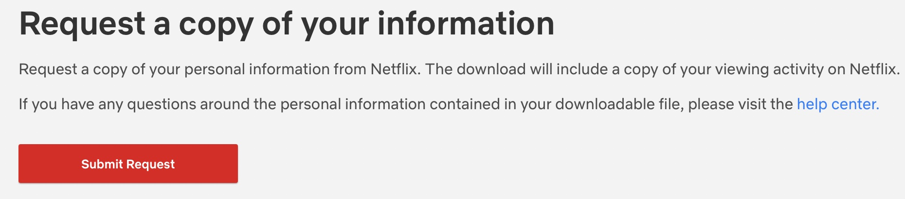
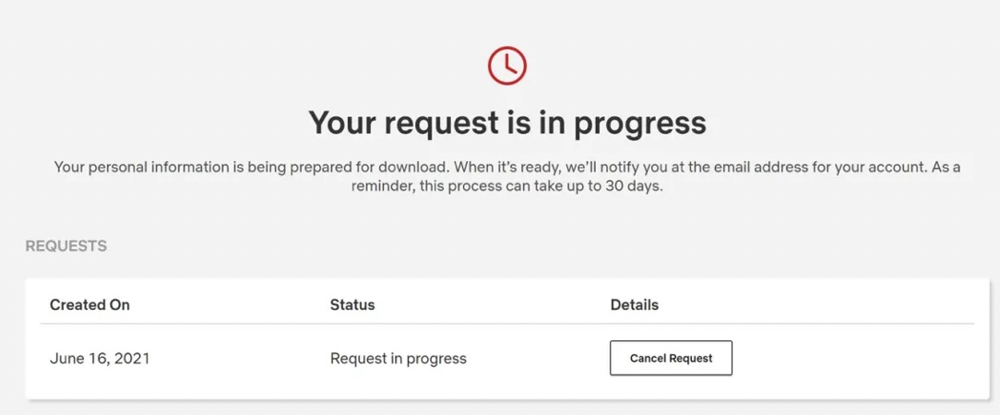
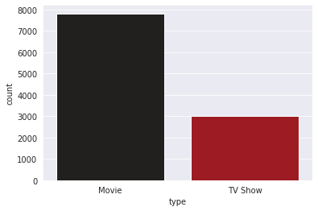
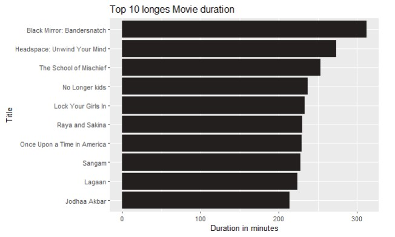
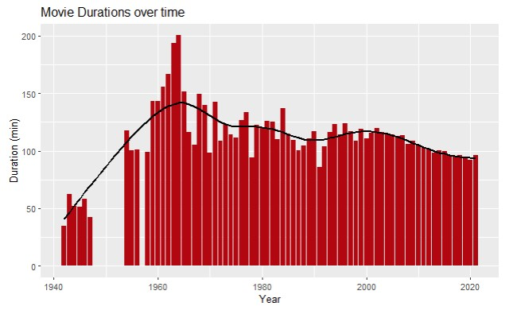
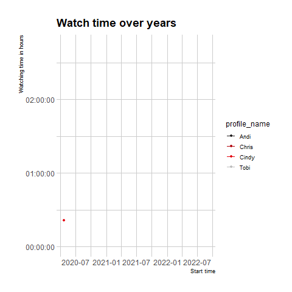
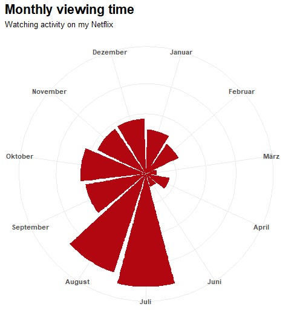
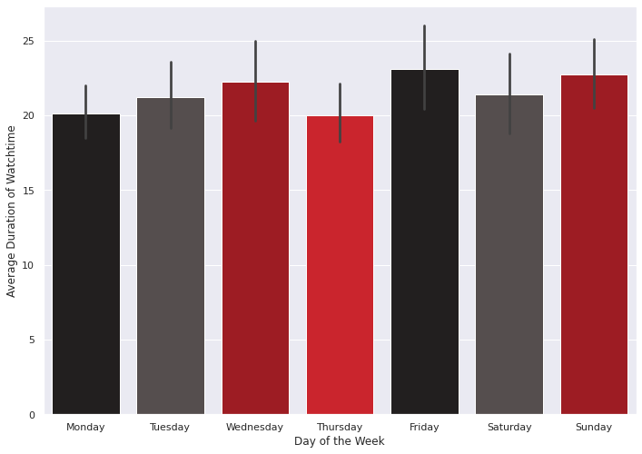
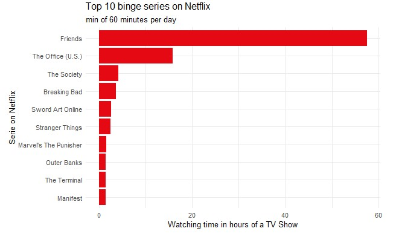

4 Exploratory Data Analysis
Before you can dive into the data, you need to do two things. First of all, you need to request your personal data from Netflix, which can take a few days. Therefore, you should ask for your data as early as possible. (If you do not have access to a Netflix account, contact your mentor, and we will provide you with some data)
Download your data
- Follow this link to request your data, and sign in with your username and password.
- After that, click on the red box Submit Request.

- Now you need to verify your request via Mail.
- Once you confirm the request, you will be forwarded to the website and have to enter your password again. If your request is in progress you might have to wait a few days until the data is available to download.

- When you receive the mail “Your download is ready,” you can download your data by clicking on the red box Get Information. Don’t wait too long since you only have 7 days to download it from your account!
- After confirming your password, you can download your data as a netflix-report.zip file. Unzip the file, open the folder CONTENT_INTERACTION and look for the ViewingActivity.csv file.
However, you can already start with the first exercises of this chapter with data we provide. To start right away, you need to set up your programming environment. This will be the place where the magic happens.
We work with R and RStudio locally which requires a setup. If you haven’t installed it yet here is a DataCamp tutorial. If you struggle, we will help you with installing at the “Introduction to Coding” Workshop or at our first Coding Meetup
We recommend using Google Colab for this project since it requires no particular setup, stores its notebooks to your Google Drive, and makes it easy for you to share them with your team members.
As an alternative to Google Colab, you might want to install Jupyter Notebook locally using the Anaconda distribution. We will give you a more detailed step-by-step demo during the “Introduction to Coding Workshop” or our first Coding Meetup.
4.1 Getting started
4.1.1 Discovering the Data
The first big step is importing a general Netflix data set into your coding environment:
Once done, let’s start by looking at the Netflix data set.
- Have a look at the columns of the data set and their “values”
- Do you see any missing values or data entries that are different from the other entries?
- What are the data formats (e.g. data types)?
- Look at the date_added columns. Do you see any critical aspects of the data?
Write down a couple of sentences to these questions, the goal is to show (your readers) what you are seeing. Also, comment on any errors or irregularities which you notice and that could be an issue later on in the project.
You can import data files by, for examples, using the command netflix_general <- read_csv(“Netflix.csv”). However, it has to be the correct path. Use head() and glimpse() or class()(on a specific colum) to get an overview. Lastly, get a quick summary of the data using {base} R’s summary() or {psych}’s describe() function. To find more ways to generate quick data summaries in R, check this blog post from Adam Medcalf. If you need some additional, more general information on how to import data and different data types, check out this cheat sheet.
You can feed the links to the respective data files above to a method of the pandas package (you might want to specify the index column). Check out the resulting pd.DataFrame instance with the head() method and the dtpyes attribute. You can also dig into a specific column with describe(). Here’s an additional pandas cheat sheet for you to reference
4.1.2 Give some overall statements
Now that you have imported the data set, let’s have a deeper look. Since you already got a feeling by now, it would be interesting to indicate some outstanding features (based on the uncleaned and untransfomated dataset)!
- What’s the longest movie (not TV show) included in the dataset? (Look very closely if your result is valid)
- Which country released the most content (movies and tv shows)?
- How many movies and tv shows are included? Try to do a simple plot here so you can see the distribution. If you cannot plot it just now, come back later to finish this.

You could use {dplyr}’s select, filter, count and arrange function to compute the desired outcome to answer the question. If you haven’t heard of the {dplyr} package yet, take the respective DataCamp course asap! For the plot, look at {ggplot} and then call geom_bar(). {ggplot2}’s syntax is perhaps a bit harder to learn at the start, but it gives you more plotting benefits in the long run. If you haven’t heard of the {ggplot2} package yet, take the respective DataCamp course.
In order to manipulate big amounts of data, Pandas implements different functions to manipulate entries in the Dataframe. Useful functions are: select, filter, value_counts and max. If some of those functions seem new to you, don’t scare away from them just now. When it comes to packages and their implementations, there are usually some easy to understand examples that can be found on their wiki page. Keep in mind that the country data is saved as a list, pandas offers the explode function that helps us with that. In order to display graphs, we recommend using seaborn as a package. Seaborn offers a wide variety of different graphs options, it is important that seaborn just translates your input into MatplotLib commands. So if you feel unsatisfied with the customisation options in seaborn, you can always build your own graph using MatplotLib. To display the amount of movies and tv-shows a seaborn.countplot can be used.
4.2 Data Cleaning and Useful Transformations
4.2.1 Date Formatting
From exploring the data in the previous tasks you might have noticed that the time and dates are not in a “date format”. In order to fix this, convert the “date_added” and “release_year” column into date format.
You can use the lubridate package to transform the column into a date format. To make things easier, check out the lubridate cheat sheet. Converting the release year might take two steps.
pd.to_datetime() is what I would look at for example. A corresponding DataCamp resource is section 4 in Working with dates and times in Python. Also, the Data Manipulation with pandas course is of great help for the following exercises
4.2.2 More details of the longest movie
So far, you have converted the column into a more appropriate format for further investigations. Can you also fix the duration of the movies into a numeric format? Can you tell now what the longest movie is? On the concept of distribution, you should also try to compute the mean and standard deviation of the movie duration in minutes.
First off, you might want to create a separate data frame for the movies so the tv shows do not bother you further. Use the filter call here. Next you might have recognized the “min” appendix. This can be deleted with the “gsub” call. With the help of mutate you can convert the column into numeric values and arrange the movies descending. For the mean and standard deviation simply use {base} R’s mean() function to compute a mean of any column in R. Similarly, R comes with the sd() function to calculate the standard deviation of a column. You can combine these two functions, e.g., in a {dplyr}’s summarise() verb.
First off, you might want to create a separate data frame for the movies so the tv shows do not bother you further. Try to find a useful criteria in the data that separates series and movies in order to filter out just the movies. To get the numeric value out of the string either a separation by space or match by regex will work. Make sure to convert the string text to a more suitable number type such as integer. Pandas already helps when finding out the standard deviation and mean with the implemented functions std() and mean().
4.2.3 A histogram of the top 10 longest movies duration
Visualizing data is essential to facilitate perception and to understand information: Create a graph to visualize the top 10 longest movies. We focus on creating a histogram in the tips section since it’s perhaps the most common approach for plotting. You can, however, choose a different chart type; just make sure that the information you want to display is clear and correct. However, as in school, always add axis labels when possible.

If your data is saved as a dataframe you can perceive with the data from the previous task. Use {ggplot2} to create a histogram. Integrate top_n() before the ggplot() call and select geom_col() to achieve a histogram presentation.
How exactly you do this is up to you. An easy approach might be to sort the dataframe with movie durations in descending order and select only the first ten columns for a barplot. Look into pandas.nlargest() for more information.
4.2.4 Visualizing movie durations over time
While we are at the topic of movie durations, it might also be interesting to see how the average movie length evolved: Choose and plot the chart you think is most appropriate for displaying this type of information. After plotting, please comment and interpret the graph: Were there any significant increases/decreases in movie length over time? If so, what could be the reason?

Again, it’s ggplot’s turn. Instead of preparing the summarise() and mean() functions combination you can also directly integrate the adjustments in the geom_bar call with (stat = “summary”, fun = “mean”).
In order to summarize the mean movie length, look into the functions groupby() to group all movies by year and then find the average length mean(). Make sure that every year in the dataframe is present. In order to plot two plots on one axis, declare the axis as one plot and use the function axis.twinx().
4.3 Your personal data
4.3.1 Load your data
You will now use the data set which you requested from Netflix. In the Netflix folder you will find the document of interest: ViewingActivity. Load this in your environment and inspect it as you did before with the Netflix Dataset. If you can’t request your data, ask your mentor; they will provide you with an alternative data set.
4.3.2 Clean and transform dataset
As you might have noticed, Netflix recorded every time you clicked on a movie even if you didn’t watch it. Check which column indicates those with a specific value. To avoid a bias in the following analysis, delete the respective rows. You can further drop columns that seem unnecessary or don’t give any information and change column names if you wish. Additionally, convert the column Duration in minutes (round them) and extract the viewing day and viewing time from “Start time” into two separate columns (e.g., “date” and “time”).
mutate and filter are your best friends in this cleaning process.
The most useful course for this task is probably Cleaning Data in Python. Use datetime functions, drop columns, filter by time.
4.3.3 Merging datasets: primitive approach
As a data scientist, you’ll often find yourself working with data sets from different data sources referencing the same object. For example, you might have the movie names in one file and the respective genre in a separate file. It would make more sense to just merge the two data sets into one. Indeed, this is the case with our data. Your Netflix data does not provide information on genre, actor, or director, while the general Netflix data set does. So, to make life easier for the upcoming tasks, you’ll now need to merge both data sets by the title name.
There are several things kind of “wrong” with the merged data set. What is it and why? Tipp: You need to prepare the dataset in a way that the title, session and episode will be split into a column of title, session and episode separately in order for the two data frames to join each other properly.
Calls such as separate(), ifelse() and rename() are suitable here. Merging can be done in several ways. You could, e.g., use {dplyr}’s left_join() to combine the two data sets based on the “left sided” dataset. Which one should be the “left-sided”?
The merge function allows for different types of merges. Try coming up with the most logical one in this scenario!
4.3.4 Merging datasets: advanced approach
You might have noticed that merging the data set is a little challenging. This is because Netflix sometimes displays title, session and episode in a remixed way and also because your Netflix data might be in German whereas the general Netflix Data is in English. We fixed this issue externally and you can now send your data to Moritz Schwerdt, who will provide you with a respective general Netflix dataset. Now try merging again!
4.3.5 Dynamic line plot
Your goal for this task is to plot how each viewer’s activity was recorded over time. Since it would be a bit unclear in a static plot, let’s try to do a dynamic chart here!

The data is already ready for this. Your ggplot() call might need some more input than you used before. As the graphic is supposed to be a line with points geom_line() and geom_point () will be a good choice of combination. The dynamic aspect is no magic, you just need to add the transition_reveal() call.
Just a heads up, in Python the Solution will not be as straight forward as in R (Python offers way too much customization for that). This Dynamic plot will help us to further understand the Backbone of all the graphs we have plotted before, we will learn more about matplotlib trying to animate our simple linelplot. If you feel like you are not up to this challenge already, dont worry, a lineplot with nice axis labels will also be counted as a solution. For those who are up to the challenge: try finding guidelines online with the keywords “animated lineplot python”. A possible solution will be to use the matplotlib.animation Module, specifically the Function “FuncAnimation”. This Function will require us to set our own update function, where we tell matplotlib what to display in every iteration that the update function will be called. Every update call will be turned into 1 frame in the animation.
4.4 Let’s get personal
We dived into the provided gerneral Netflix data set and a bit into your overall personal Netflix dataset, but now is the time to look into your very own Netflix history. First, we want to look at the longest movie you have ever watched, afterward, into your general and binge-watching behavior. We recommend using Tobi’s data if you are currently working with the Netflix data set provided from us.
So, what’s the longest movie you have ever watched? Maybe you also want to check the day? Do you remember that day?
filter, select and arrange will do a good job here.
Useful functions might be sort_values() and groupby().
4.4.1 Monthly viewing time in 2021
Let’s get a little fancy by displaying the monthly average time you watched in 2021 (or another year of your choice). 
This task involves three steps. First, you want to extract the month from the “start_time” column, where lubridate will help you. You can then use the group_by argument to group the dataset by the month and filter for a specific year. After that, you can pipe along and directly add the third step: your ggplot call. Now, you can visualize your output however you want. The presented output is obtained by combining geom_col + coord_polar().
We recommend a stepwise course of action: first, extract the month from your date column - at this point you should have a clue which package might be able to help! Then, you should groupby month and filter for a year of your choice. The last step is the generation of your plot! A great package for this task is plotly.graph_objects. You might want to play around with the Barpolar function a little to receive the desired output.
4.4.2 Average per weekday
Our subsequent interest lies in analyzing the viewing time of specific weekdays. Either choose the whole year or a month of your interest and look at the weekday average. On which days have you watched more Netflix, can you see a peak? For our advanced programmers: Would it not be interesting to look at what time of the day you watch the most?

As before, you now want to extract the weekday from the “start_time”. Further you might want to filter for a specific month or year and group by date and weekday. You will then need to sum the minutes per day and group again by weekday to summarize for the mean of the duration. Finally, you could, for example, plot a classic ggplot.
The procedure is similar to before. Get the weekday from your data, compute the sum of daily minutes of watching, and generate a bar plot. The seaborn package is an amazing tool that generates beautiful plots with really limited code!
4.5 Binge watching
In this section, the goal should be to create a plot of your top 10 binge tv shows. Before you begin, you need to decide what binge watching means to you. We decided it’s at least 1 hour of a TV show per day. But you should adjust that to your watching behavior.

Again, you could use the familiar {dplyr} verbs for this part. You first want to filter for TV Shows and group by date and title. You then need to count episodes and minutes per day and group again by title. Now, calculate the sum of episodes and minutes per day. Here you might want to convert minutes into hours. Finally, arrange everything descending. For the plot, you can use ggplots geom_col() or whatever you think is best to present your binge series
To do it “our way”, you could create a dataframe that only consists of the TV Shows you watched, count the number of episodes, your daily minutes, and group that by title. You can calculate the sum of episodes and minutes (or hours) per day and arrange that in descending order. You can create a bar plot or any other plot that conveys the message of your top ten bingeworthy shows!
4.6 Scatterplot with marginal density
You have computed and visualized your favorite binge tv shows, but how has your watching behavior developed on Netflix since you first used it? This question is something we want to analyze now. There are different possibilities to explore this question. We will start by visualizing it via a scatterplot with marginal density. Include all the profile names for this task and make a visual comparison. What can the plot tell us about your watching behavior?

To achieve this visualization calls from the packages ggExtra can be added to your ggplot. Have a look at these sources and find your code. The shown visulaization was plotted with Python, R’s output can therefore vary !
Again, seaborn is your best friend! The jointplot function will give you a great plot if you use it correctly.
4.7 Word cloud with your favorite genre
Until now, even though we merged the two data sets, analyzing the Netflix movies was possible by only using each one. Let’s change that! Generate a word cloud with your personal most watched genres! Is it what you expected it to be?
Install the package “wordcloud” and start preparing your joined dataset. We are only interested in the “listed_in” column now. Use the mutate function to do a structure split, so each genre will get its row instead of being separated by a comma. Add unnest to your call. Extract the column and fix possible issues (e.g., white space). An easy way is to use the table() call on the listed_in and change the table directly into a data frame. For the word cloud, set a seed if you want to get the same cloud every time you run the code. The call wordcloud only needs to be filled with the respective word and frequency column. Feel free to spice it up!
Use the Wordcloud package that can be installed by using: from wordcloud import WordCloud. Stopwords are words, that will not be shown on the wordcloud.
4.8 Surprise Us!
This section only scratches the surface of what is possible with your Netflix data and some columns haven’t even been analyzed. Have you discovered anything cool and/or want to experiment with a new visualization technique to deliver a message? Here is the right place to put down anything you did and would like to do with the project that did not quite fit in the other exercise sections. If you are looking for some visualization inspiration, check out this page. Congratulations! Based on your work with fundamental data transformations and many visualizations, you now have a solid understanding of the Netflix data sets and your personal data! With this, you have completed the EDA part of the project! Don’t forget to send your project results to our project submission email address (projekt@tech-academy.io) before the deadline (05.02.2023, 23:59). Thanks for being a part of TechAcademy! If you are in the advanced track your coding journey goes on with the next section!